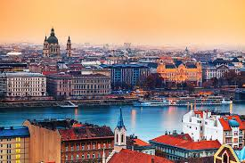
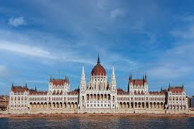
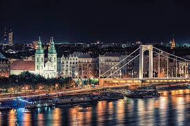
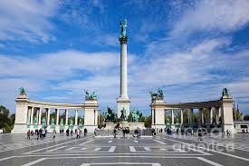
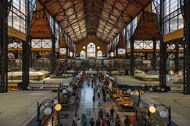
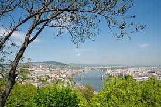

Multimédia
Nesta página encontra conteúdos multimédia
Fotografias






Vídeo
Poesia
Na ponte suspensa entre dois silêncios
— Buda e Peste —
sinto que sou estrangeiro em mim,
como o Danúbio que corre sem saber
se leva memórias ou apenas água.
A cidade ergue-se em cúpulas e sombras,
em teatros de pedra, em olhos de janelas,
e eu, que não pertenço a nada,
sou o transeunte de uma pátria interior
que nunca chega.
Budapeste é um pensamento com torres,
um poema que se escreve em nevoeiro,
um vinho que arde como a verdade oculta
de quem sonha sempre mais longe do que existe.
E no entanto, parado à beira do rio,
com as luzes a tremer como certezas frágeis,
sei que pertenço —
não à cidade, nem a mim,
mas ao instante irrepetível
que passa como o Danúbio,
imenso, indiferente, eterno.